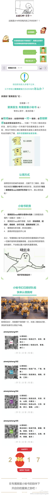
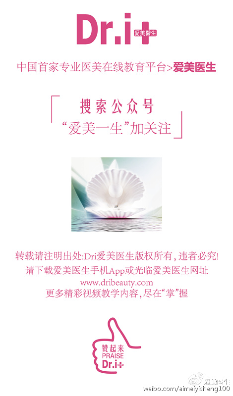

微博把文章里来自微信的二维码全都自动做了虚化处理。@爱美医生Dri:发布了头条文章：《【爱美·福利】：快来认领一只属于您的爱美医生专属客服小秘书》 【爱美·福利】：快来认领一只属于您的爱美医生专属客服小秘书 【爱美·福利】：快来认领一只属于您的爱美医生专属客服小秘书  
回复@catbert: 布局肺癌的检测和治疗，是看到现在的雾霾危机会在十年后带来肺癌的高发吧。从灾难中寻找商机，商业逻辑无可厚非，但心里感觉总是怪怪的。医学有些伦理上的悖论，不能克服的话，会成为商业成功的障碍，类似潜意识对意识的影响。 //@catbert:@Ada李力@蓝鲸医健联:#蓝鲸观察#一年来，复星医药动作不断，借助新药研发、AI人工智能、医疗服务、健康保险等逐渐打造起来大健康‘生态圈’。其布局发展或预示着一种趋势、一种变化，行业从业者或可有所借鉴，共同见证行业大变革。 新药研发、AI人工智能、健康保险，2017复星医药打算玩什么？
#创业#同事说订餐这么多次，只有一个送餐员给她留下深刻印象。她坐电梯下楼取餐，送餐员就在电梯口等着，递过来餐盒后，直接帮她按下了上楼的电梯钮，她连电梯门都不用出。 这个送餐员都没要求好评，同事主动去打了好评。我听后也印象深刻，看似简单的送餐，多动脑多动腿，一样可以做出优质服务来。